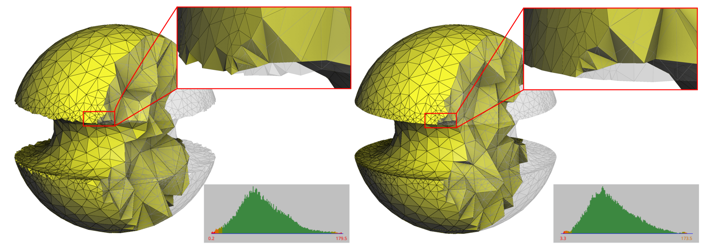
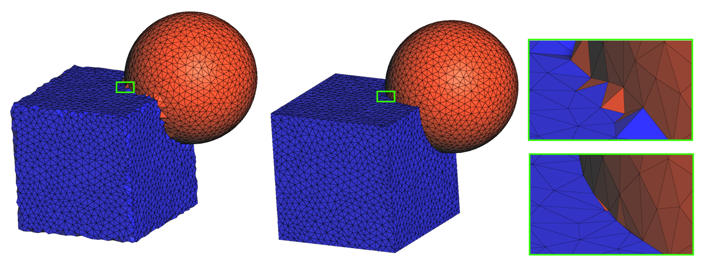

François Protais
INRIA Sophia Antipolis


Smoothing and feature recovery on a mesh generated from an implicit domain. The mesh connectivity is preserved while its vertices are optimized and fitted to the target geometry.
Tetrahedral meshes frequently require an additional optimization step after generation or deformation. Poorly shaped elements can affect the robustness and accuracy of subsequent numerical computations, while the boundary of the mesh must often continue to approximate a prescribed geometry.
In many applications, however, changing the connectivity is not desirable. Cells can carry material labels or simulation data, and their indices and adjacency may already be used by downstream software. In these situations, remeshing operations such as edge splits, collapses, or flips are inappropriate.
The new Mesh_smoothing_3 package addresses this problem by optimizing the
positions of mesh vertices without modifying the mesh connectivity. It combines
volumetric mesh quality improvement with geometric fitting of surfaces, curves,
and constrained points.
Volume Mesh Optimization
At the core of Mesh_smoothing_3 is a nonlinear optimization of the mesh vertex
positions. Element quality is measured using a conformal distortion energy,
designed to favor well-shaped tetrahedra and improve their dihedral angles.
The energy includes a barrier against element inversion. Consequently, when the input mesh is valid, the optimization maintains positively oriented tetrahedra. The same framework can also be used to attempt to untangle meshes that initially contain inverted elements.
Importantly, only vertex coordinates are modified. Cell connectivity, cell indices, patch identifiers, material labels, and other data attached to the mesh remain unchanged.
Fitting the Mesh to Geometry
Improving element quality alone is generally insufficient for boundary vertices: moving them freely would deform the represented shape.
Mesh_smoothing_3 therefore couples mesh quality optimization with geometric
fitting. Rather than requiring one particular representation of the target
geometry, the package uses a simple abstraction that associates constrained
vertices with local tangent spaces.
Depending on the geometric dimension, these constraints can represent:
- a tangent plane for a surface;
- a tangent direction for a curve;
- a fixed position for a corner or constrained point.
These geometric constraints are integrated directly into the optimization. They are generally treated as soft constraints, allowing the optimizer to balance element quality and geometric accuracy, while selected vertices, edges, or facets can also be explicitly locked.
Changes in the target tangent spaces can additionally be used to recover and preserve sharp features.
Several Geometric Representations
The optimization algorithm is deliberately separated from the representation of the target geometry.
The package provides ready-to-use projectors for fitting a mesh to another
CGAL C3t3, to polyhedral mesh domains, to polyhedral domains containing
feature curves, and to implicit surfaces represented through signed-distance
functions.
Applications can also implement their own tangent-space construction. This makes it possible to optimize meshes whose boundaries combine several types of geometry.


Smoothing of a hybrid domain combining polyhedral and implicit boundary representations. The same optimization process can fit the different geometric components and their interface. Close-ups highlight that a given topology may not be adequate to fit a geometric target.
This separation between mesh optimization and geometric representation is also useful when the input mesh and the geometry used for fitting are different. A coarse or distorted volume mesh can, for example, be optimized against a more accurate reference geometry without changing its connectivity.
A Compact Interface
The main entry point is CGAL::boundary_aware_mesh_smoothing(). For example,
an existing C3t3 can itself be used as the geometric reference:
CGAL::boundary_aware_mesh_smoothing(
c3t3,
CGAL::Mesh_smoothing_3::C3t3_mesh_projector(c3t3));
The same optimization function can be used with the other provided projectors or with a user-defined geometric oracle.
Named parameters control, among other options, constrained vertices, edges and facets, stopping criteria, verbosity, and the execution policy. The implementation supports sequential execution as well as parallel execution when the corresponding backend is available.
Smoothing or Remeshing?
Mesh_smoothing_3 is intended for applications where the existing mesh
connectivity must be retained.
When changes to the number of vertices, mesh resolution, or connectivity are required, CGAL’s tetrahedral remeshing functionality remains the appropriate tool. The two operations therefore address complementary use cases: remeshing modifies the discretization, whereas smoothing optimizes the embedding of a fixed discretization.
One consequence of keeping connectivity fixed is that properties depending on the current vertex positions and connectivity simultaneously are not preserved. In particular, smoothing a Delaunay or regular triangulation may invalidate its Delaunay property.
Status
The package `Mesh_smoothing_3` is already integrated in CGAL's "main" branch on the CGAL GitHub repository, and will be officially released in the upcoming version of CGAL, CGAL 6.3, scheduled for October 2026.
Documentation of the package Mesh_smoothing_3
CGAL “main” branch on GitHub